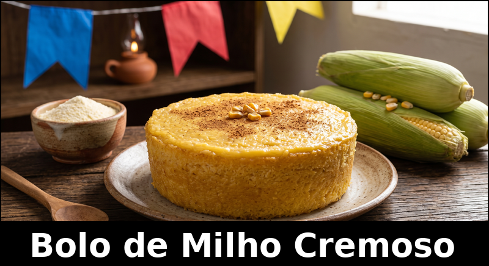
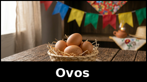
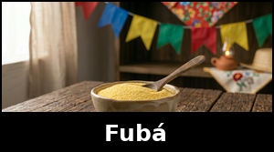

Universidade Estadual do Sudoeste da BahiaProgramação Web IAtividade: Receita Culinária em HTML |
O bolo de milho cremoso é uma receita tradicional da culinária brasileira, muito lembrada nas festas juninas. Ele é preparado com ingredientes simples e possui textura macia, sabor marcante de milho e aparência dourada depois de assado.
Esta página apresenta uma receita de bolo de milho cremoso organizada em HTML. O conteúdo utiliza títulos, parágrafos, lista, tabela, imagens, links externos e navegação interna por meio de âncoras.
A receita foi escolhida por ser simples, tradicional e adequada para demonstrar a organização de uma página web com os elementos solicitados na atividade.

Cada ingrediente possui uma imagem e um link externo para uma página de compra ou pesquisa de compra do produto.
|
Milho verde 3 espigas |
Leite de coco 1 xícara |
Leite 1 xícara |
|
 Ovos 4 unidades |
Açúcar 2 xícaras |
 Fubá 1 xícara |
|
Manteiga meia xícara |
Fermento químico 1 colher de sopa |
Sal 1 pitada |
|
Modo de preparo do Bolo de Milho Cremoso |
|
O resultado é um bolo de milho cremoso, úmido e saboroso, ideal para acompanhar café ou ser servido em festas juninas.
Receita finalizada
Receita adaptada para fins acadêmicos, com base em receitas tradicionais de bolo de milho cremoso utilizadas na culinária brasileira.
Atividade da disciplina Programação Web I, Unidade I.